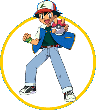
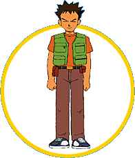
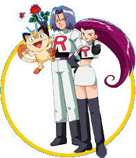

|
|

Name: Ash Ketchum
Age: 10
Home Town: Pallet Town
Description: A young boy from the town of Pallet who number one goal in life is
to be the greates Pokemon Master. Ash is over confident who takes his favorite Pokemon
Pikachu everywhere.

Name: Misty
Age: 11
Home Town: Cerulean City
Description: Another young pokemon trainer whos favorite type is water. Misty
left Cerulean city to prove to her sisters that she could be a great trainer. Although she
is always nagging on Ash she secretley has a crush on him.

Name: Brock
Age: 13
Home Town: Pewter City
Description: Brock is determined to be the greatest Pokemon Breeder. He was once
the gym leader of the Pewter City gym but he left to join Ash on his journey. Brock is
obssed with woman, especially Officer Jenny and Nurse Joy.
Name: Professor Oak
Age: 56
Home Town: Pallet Town
Description: Professor Oak is the world renowned scientist who studies Pokemon
and how they act. He gave Ash his Pokemon, Pikachu.

Name: Jesse
Age: 19
Home Town: ?????
Description: Jesse is a member of Team Rocket. She is always bragging about her
beuty and trying to get Ash and Piakchu. Jesse and James together always means failure.
Name: James
Age: 19
Home Town: ?????
Description: James is another member of Team Rocket who is always hungry. James
is also after Pikachu and Ash, but he seems less evil than Jesse. Jesse and James together
always means failure.
|
|
|
|